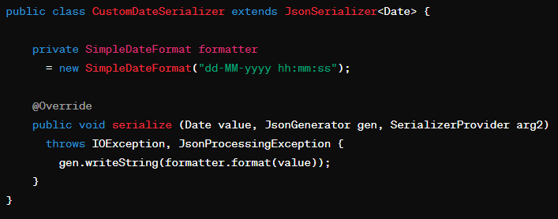

<!DOCTYPE html>
<html lang="en">
<head>
  <meta charset="UTF-8">
  <title>Title</title>
</head>
<body>

</body>
</html><!DOCTYPE html>
<html lang="en">
<head>
  <meta charset="UTF-8" />
  <meta name="viewport" content="width=device-width, initial-scale=1.0" />
  <meta http-equiv="X-UA-Compatible" content="ie=edge" />
  <title>Java</title>
  <meta name="description" content="Portfolio Template for Developer" />

  <link rel="stylesheet" href="../css/style.css" />

  <link rel="preconnect" href="https://fonts.googleapis.com" />
  <link rel="preconnect" href="https://fonts.gstatic.com" crossorigin />
  <link
          href="https://fonts.googleapis.com/css2?family=Source+Sans+Pro:wght@400;600;700;900&display=swap"
          rel="stylesheet"
  />
</head>
<body>
<header class="header">
  <div class="header__content">
    <div class="header__logo-container">
      <span class="header__logo-sub">PETRAU Killian</span>
    </div>
    <div class="header__main">
      <ul class="header__links">
        <li class="header__link-wrapper">
          <a href="../index.html" class="header__link"> Acceuil </a>
        </li>
        <li class="header__link-wrapper">
          <a href="../index.html#about" class="header__link">A propos </a>
        </li>
        <li class="header__link-wrapper">
          <a href="../index.html#projects" class="header__link">
            Projets
          </a>
        </li>
        <li class="header__link-wrapper">
          <a href="../index.html#contact" class="header__link"> Me contacter </a>
        </li>
      </ul>
      <div class="header__main-ham-menu-cont">
        
        
      </div>
    </div>
  </div>

</header>
<section id="about" class="about sec-pad">
  <div class="main-container">
      <h2 class="heading heading-sec heading-sec__mb-med">
      <span class="heading-sec__main">Java</span>
      </h2>
        <div class="project-details__desc">
      <span class="project-details__desc-para">
        Java est un langage de programmation très populaire et puissant, créé dans les années 1990 par James Gosling et ses collègues chez Sun Microsystems. Au fil du temps, il est devenu l'un des langages les plus utilisés dans le monde, bénéficiant d'une vaste communauté d'utilisateurs et d'une multitude de frameworks et de bibliothèques pour faciliter le développement.
        <br><br>
        Ce langage est largement adopté dans le milieu professionnel pour la création d'une grande variété d'applications, de logiciels et de systèmes d'entreprise. Grâce à sa portabilité et à sa sécurité, il est privilégié par les grandes entreprises et les organisations gouvernementales, en quête d'une plateforme robuste et fiable pour leurs projets logiciels.
L’actualité professionnelle accorde une place importante à Java, un langage qui a fait ses preuves en termes de maturité, de portabilité et de performances. La dernière version majeure de Java est sa version 21 sortie en août 2023 introduisant plusieurs fonctionnalités et améliorations  y compris des mises à jour de sécurité, des améliorations de performance, et de nouvelles fonctionnalités de programmation.  Avec des versions régulièrement mises à jour, Java continue de s'adapter aux besoins changeants du monde professionnel. Ces mises à jour apportent non seulement des améliorations fonctionnelles mais aussi de meilleures performances, ce qui le rend idéal pour des applications à haute performance comme les systèmes de trading et les plateformes de données en temps réel. La sécurité est également une préoccupation majeure dans les environnements d'entreprise, et Java offre un ensemble robuste de fonctionnalités de sécurité intégrées. Son écosystème riche, comprenant une multitude de bibliothèques et de frameworks comme Spring, facilite le développement rapide et robuste d'applications. De plus, sa nature indépendante de la plate-forme le rend extrêmement portable, permettant aux entreprises de déployer des applications sur divers systèmes d'exploitation sans modification. La grande disponibilité de développeurs Java qualifiés et une vaste communauté de soutien facilitent également la maintenance et le support à long terme des applications. En outre, Java est de plus en plus adapté aux environnements de cloud computing, une tendance qui continue de croître en 2023. Ainsi, Java maintient sa pertinence et son importance dans le paysage professionnel actuel grâce à son évolution continue et à sa polyvalence.
<br><br>
Cependant, les fonctionnalités de traitement des dates en Java faisaient souvent l'objet de critiques en raison de leur complexité et de leur manque de convivialité, ce qui peut poser des défis lors du développement de projets. J'ai moi-même été confronté à ce problème lors de mon projet "Cinetech", qui nécessitait une manipulation fréquente de dates.
En effet, dans le cadre de ce projet, nous devions gérer les dates des séances et les périodes de chaque film. Néanmoins, la difficulté résidait dans la persistance des données qui ne pouvaient pas être directement "sérialisées". Pour résoudre ce problème, nous avons exploré différentes approches, mais celle qui s'est avérée efficace était la création d'un convertisseur spécifique pour nos besoins en manipulation de dates.
      <br>
       
       
        <br><br>
        J'ai eu l'opportunité de suivre une formation approfondie sur Java au sein de l'école Intech. Cette formation a couvert divers aspects du langage, notamment l'utilisation de la plateforme JEE et la manipulation d'API. En parallèle, j'ai acquis une solide expérience pratique en travaillant sur divers projets, particulièrement le projet Cinetech pendant mes études, ainsi que le projet BL.PMSI lors de mon alternance chez Berger-Levrault. Ce dernier projet a été construit avec le framework Spring, reconnu comme l'un des plus complets et puissants pour le développement d'applications.
Mon niveau de compétence en Java est autonome grâce à ces expériences concrètes et à mes formations. Cependant, je suis conscient de l'importance de continuer à perfectionner mes compétences, car Java évolue constamment avec de nouvelles versions et l'émergence de nouveaux frameworks. <br><br>Mon objectif est de devenir un expert en Java, et je suis animé par une forte motivation à poursuivre mon apprentissage dans ce domaine.
Malgré mes compétences acquises en Java grâce à mes formations et à mon expérience pratique, je reconnais qu'il existe toujours des domaines où je peux m'améliorer. Par exemple, bien que j'aie réussi à résoudre le problème de persistance des dates dans le projet Cinetech en développant un convertisseur dédié, je pourrais approfondir davantage ma compréhension des concepts de sérialisation et de désérialisation pour les objets complexes.
En outre, bien que j'aie travaillé avec le framework Spring sur le projet BL.PMSI, je suis conscient que de nombreuses fonctionnalités avancées de Spring restent à explorer en profondeur. Compte tenu de sa robustesse et de sa complexité, il est probable que je puisse mieux maîtriser certains aspects pour optimiser mes développements et garantir de meilleures performances pour mes applications.
En ce qui concerne les nouvelles versions de Java et les frameworks émergents, il est possible que je ne sois pas toujours au fait des dernières mises à jour et des tendances actuelles. Garder une veille technologique constante et rester ouvert à l'apprentissage continu sont des éléments essentiels pour rester à jour dans le domaine du développement Java.
Afin d’étoffer mes compétences, j'ai décidé d'entreprendre une auto-formation sur Spring Boot. Cette démarche inclura des cours en ligne, des tutoriels vidéo, ainsi que des projets pratiques pour me permettre de mettre en application les concepts appris. Par exemple, je prévois de suivre la formation Spring Boot (Journée 1) disponible sur YouTube et de travailler sur des tutoriels d'Objis.com pour approfondir ma compréhension de l'auto-configuration et d'autres fonctionnalités clés.
        <br><br>
        Cette auto-formation me permettra non seulement de combler les lacunes dans mes compétences actuelles, mais aussi de me préparer à relever de nouveaux défis dans le monde du développement Java.
En conclusion, bien que je puisse posséder un niveau de compétence solide en Java, je reconnais que devenir un expert dans ce domaine requiert un engagement constant envers l'apprentissage, l'expérimentation et l'amélioration continue de mes compétences. Mon objectif de devenir un expert en Java est un cheminement qui demande de l'humilité et un effort soutenu pour combler les lacunes et relever de nouveaux défis.

      </span>
        </div>
  </div>
  <div class="project-details__tools-used">

    <div class="skills">
      <div class="skills__skill">CineTech</div>
      <div class="skills__skill">BL.PMSI</div>

    </div>
  </div>
</section>
<footer class="main-footer">
  <div class="main-container">
    <div class="main-footer__upper">
      <div>
        <div class="main-footer__row main-footer__row-1">
          <h2 class="heading heading-sm main-footer__heading-sm">
            <span>Social</span>
          </h2>
          <div class="main-footer__social-cont">
            <a target="_blank" rel="noreferrer" href="#">
              
            </a>
            <a target="_blank" rel="noreferrer" href="#">
              
            </a>
            <a target="_blank" rel="noreferrer" href="#">
              
            </a>
            <a target="_blank" rel="noreferrer" href="#">
              
            </a>
            <a target="_blank" rel="noreferrer" href="#">
              
            </a>
          </div>
        </div>
      </div>

    </div>
  </div>
</footer>
</body>